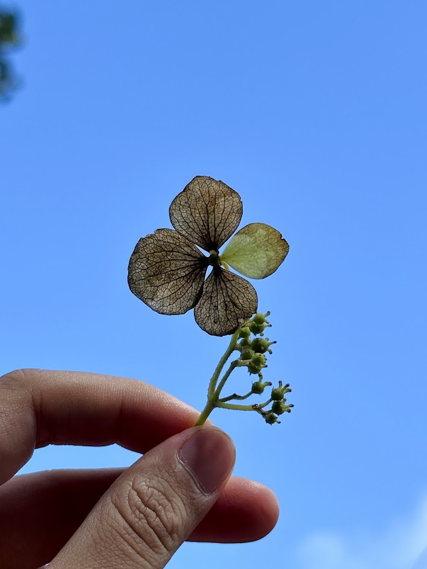

<!DOCTYPE html>
<html lang="zh-TW">
<head>
  <meta charset="utf-8" />
  <title>我們的地圖</title>
  <meta name="viewport" content="width=device-width, initial-scale=1.0">

  <!-- Leaflet CSS -->
  <link rel="stylesheet" href="https://unpkg.com/leaflet/dist/leaflet.css" />

  <style>
    body { margin:0; padding:0; }
    #map { width:100%; height:100vh; }
    .popup-content img { border-radius: 8px; margin-top: 5px; }
  </style>
</head>
<body>

<div id="map"></div>

<!-- Leaflet JS -->
<script src="https://unpkg.com/leaflet/dist/leaflet.js"></script>
<script>
  // 建立地圖
  var map = L.map('map').setView([25.172671184428573, 121.50047937267624], 13);

  // 加入圖磚
  L.tileLayer('https://{s}.tile.openstreetmap.org/{z}/{x}/{y}.png', {
    attribution: '© OpenStreetMap'
  }).addTo(map);

  // 第一個點
  var marker1 = L.marker([25.172671184428573, 121.50047937267624]).addTo(map);

  // 點擊 popup
  marker1.bindPopup(`
    <div class="popup-content" style="width:230px; line-height:1.5; font-family:sans-serif;">
      <b>🌿 2026/08/16</b><br>
      📍 向天池<br><br>

       二子坪>面天山>向天山>向天池<br><br>

       狹辦八仙花<br>
      <br>

      今天自己去爬山，看到一片乾燥的狹辦八仙花萼片在發光，採回家送昱安
    </div>
  `);

</script>

</body>
</html>
